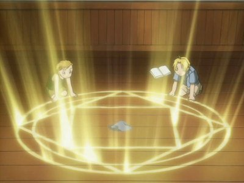

1.1.3 实验室安全守则 - Laboratory Safety Rules
上一节中提到，化学是一门以实验为基础的科学。几乎所有对化学的研究均需要在实验室中进行。
但化学实验室往往含有对人体有害的试剂和仪器，即使是常用的乙醇（C2H5OH）溶液也有一定的毒性。各种用于加热、制冷、激光、电解的仪器对人也有可能有危害。
所以，在进行化学实验时，需要特别注意保护自身安全，人的健康与安全永远是最重要的。
以下是一些通用的实验室守则。请遵守实验室守则，保护自己和他人的安全：
- 实验开始前，
- 提前熟悉自己要完成的实验，熟知所有的试剂及仪器，包括其可能导致的危险。
- 穿戴好自身的防护装备（PPE），包括护目镜、实验服、手套。
- 尽量穿长裤与包脚趾的鞋，确保除了脸部，没有皮肤是裸露的。长发需扎在脑后。
- 实验中：
- 尽量避免独自做实验。
- 熟悉喷淋洗眼装置和淋浴头的位置，如果眼睛或皮肤接触有害的化学物品，请第一时间使用。之后立即通报实验室的负责人（包括教授、助教、其他实验人员）。
- 如果有任何意外情况发生，请立即通报实验室的负责人。
- 禁止在实验室中饮食。
- 保持警惕，禁止使用耳机。
- 禁止将实验室内的试剂和仪器带出实验室。
- 禁止使用未知的试剂和仪器，你永远无法知道上一个人在实验室里进行了什么实验。
- 使用加热装置（酒精灯、加热垫、包括会放热的反应）时：
- 按照要求使用/搭建实验仪器。
- 不要徒手触摸任何仪器，制冷装置同理。
- 容器口不要对着任何人摆放。
- 不要将易燃品放置在其周围。
- 挥发性物质需在通风橱内使用。
- 如有玻璃制品破碎，请通报实验室负责人处理。
- 实验结束后：
- 将实验仪器归还原位。
- 剩余的试剂按妥善的方法处理好。
- 实验室通常有无机物废液缸、有机物废液缸、固体废弃物箱、手套垃圾箱、碎玻璃箱。
- 几乎所有的试剂都不能直接倒入下水槽。
除此之外，不同的实验室还会有一些独有的规则，例如：
- 使用挥发性毒试剂的实验室会对通风有特殊要求
- 使用易燃易爆的试剂的实验室会要求严禁明火
- 使用生物有害试剂，研究细菌和病毒的实验室会有特殊的隔离需求
- 使用各大型仪器时（比如核磁共振，质谱，扫描电子显微镜）均有其要求。
总而言之，无论进入哪个实验室，做什么实验，请严格遵循此实验室的安全守则，注意安全。

图片来源：
https://www.quora.com/How-would-Edward-Elric-react-if-Alphonse-Elric-died